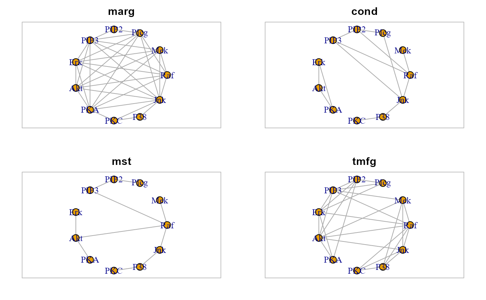

Convert a correlation matrix to an igraph object.
corr2graph(R, n, type = "marg", method = "none", alpha = 0.05, ...)
| R | Correlation matrix. |
|---|---|
| n | Sample size (i.e., the number of subjects). |
| type | Graph building method. If |
| method | Multiple testing correction method. One of the values
available in |
| alpha | Significance level used to compute the correlation threshold.
By default, |
| ... | Currently ignored. |
An igraph object.
Palluzzi F, Grassi M (2021). SEMgraph: An R Package for Causal Network Analysis of High-Throughput Data with Structural Equation Models. <arXiv:2103.08332>
Massara GP, Di Matteo T and Aste T (2009). Network Filtering for Big Data: Triangulated Maximally Filtered Graph. Journal of complex Networks, 5(2): 161--178. <https://doi.org/10.1093/comnet/cnw015>
Prim RC (1957). Shortest connection networks and some generalizations. Bell System Technical Journal, 36(6):1389--1401. <https://doi.org/10.1002/j.1538-7305.1957.tb01515.x>
Mario Grassi mario.grassi@unipv.it
# Graphs creation C1 <- corr2graph(R = cor(log(sachs$pkc)), n = nrow(sachs$pkc), type = "marg", method = "BH") C2 <- corr2graph(R = cor(log(sachs$pkc)), n = nrow(sachs$pkc), type = "cond", method = "BH") C3 <- corr2graph(R = cor(log(sachs$pkc)), n = nrow(sachs$pkc), type = "mst", method = "BH") C4 <- corr2graph(R = cor(log(sachs$pkc)), n = nrow(sachs$pkc), type = "tmfg", method = "BH") # Graphs plots par(mfrow=c(2,2), mar= rep(2, 4)) plot(C1, layout=layout.circle, main= "marg"); box(col="gray") plot(C2, layout=layout.circle, main= "cond"); box(col="gray") plot(C3, layout=layout.circle, main= "mst"); box(col="gray") plot(C4, layout=layout.circle, main= "tmfg"); box(col="gray")